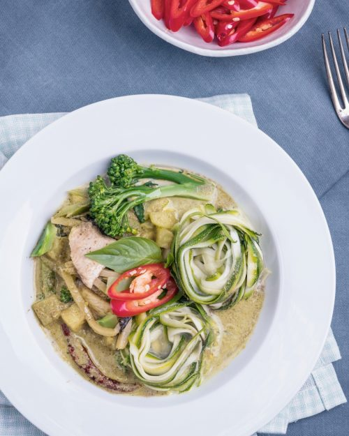
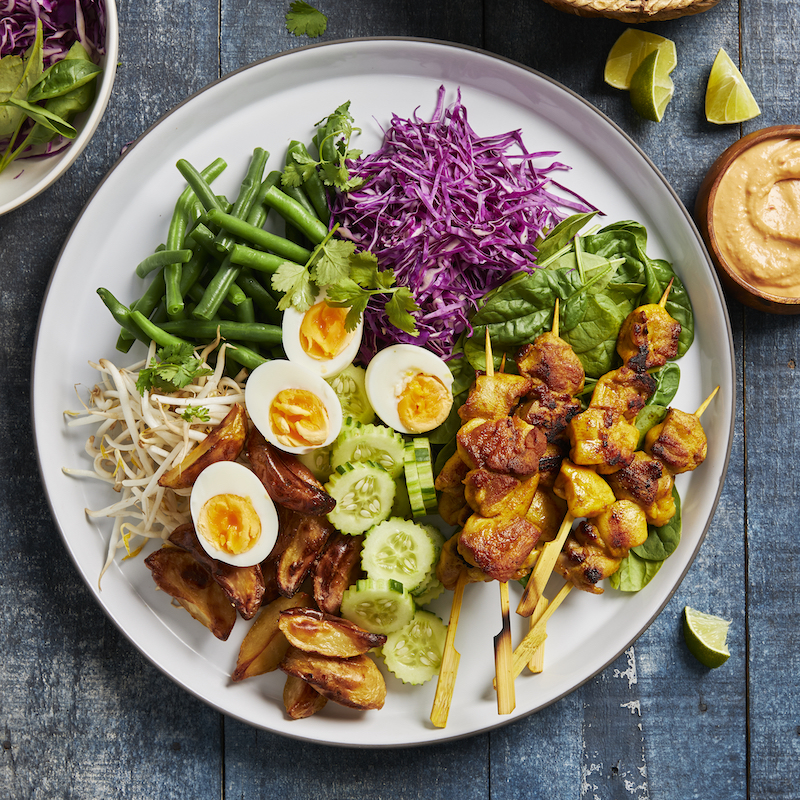
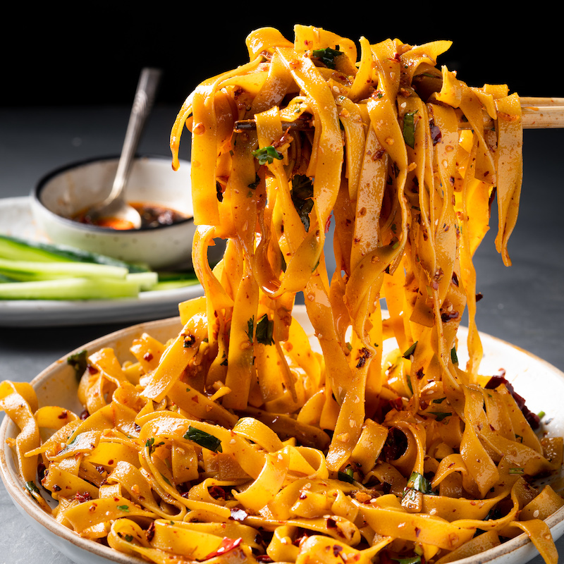
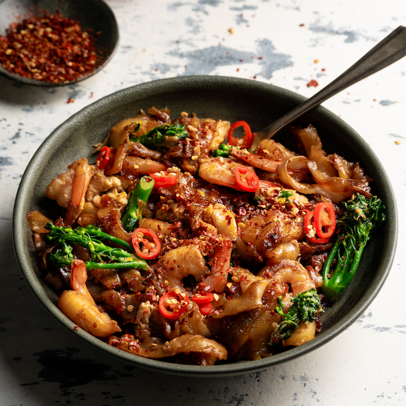
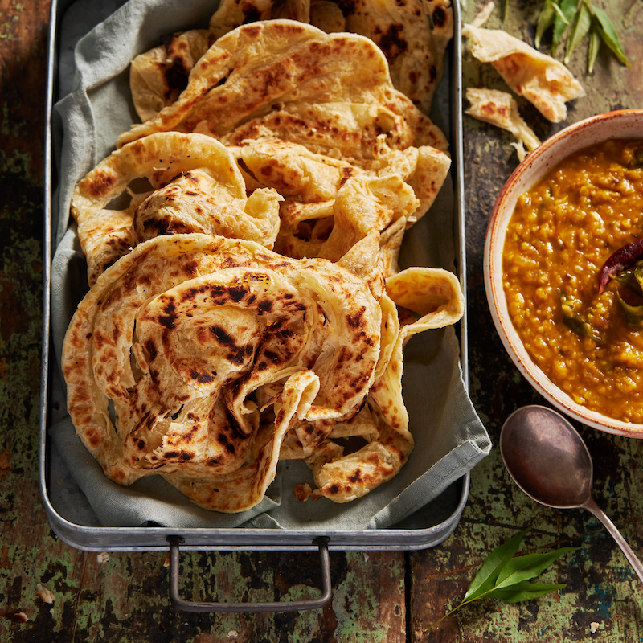

Thai Green Curry with Zucchini Noodles
Healthy yet filling. This dish is packed with flavours and nitrition. It's creamy, fragant and the crunch of zucchini noodles is the cheery on top.
Link to the full recipeGado Gado
Salad never fails to excite me. This Gado Gado is colourful, refreshing and falourful thanks to the peanut sauce. It's also versatile, customize it with your favorite grilled protein.
Link to the full recipe10-minute Spicy Chilli Garlic Oil Noodles
I love chilli garlic oil noodles as much as the next person. And I ESPECIALLY love them when I can get them on my plate in just 10 minutes, straight up.
Link to the full recipeGarlic Prawn Pad See Ew
Chewy thick rice noodles cooked to perfection in soy, oyster sauce mixture. Load it up with your favourite vegetables or whatever left in the fridge and you have a tastety dish.
Link to the full recipeMalysian Roti Cani
Flaky, charry rotis that are the perfect vessel for a spiced chana dhal… Plan ahead as this does require overnight prep, but goodness – it’s worth going the extra mile!
Link to the full recipe